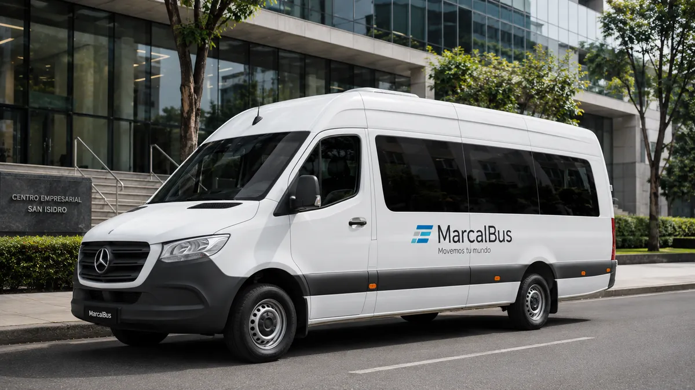

✓
Un punto de coordinación
El responsable no tiene que administrar varios vehículos ni perseguir distintas confirmaciones para completar un traslado.
Un grupo que llega tarde, un punto de recojo confuso o un cambio que nadie comunica termina siendo trabajo extra para Recursos Humanos. MarcalBus coordina minibuses corporativos para equipos, turnos, capacitaciones y eventos, con comodidad para el usuario y control operativo para quien administra el servicio.

Cuando una empresa necesita trasladar a diez, quince o más personas, coordinar vehículos separados suele generar una cadena de problemas: pasajeros que esperan en lugares distintos, conductores que reciben instrucciones incompletas, horarios que se contradicen y un encargado de RR. HH. que debe responder consultas durante toda la jornada.
El minibus corporativo permite ordenar la experiencia en una sola operación. Definimos puntos de encuentro, horarios de salida, ruta, capacidad y contacto responsable. El usuario sabe dónde estar y qué esperar; la empresa sabe quién coordina y cómo se monitorea el servicio.
Esto es especialmente valioso cuando existen capacitaciones, turnos, visitas a planta, obras, eventos o sedes fuera de la ruta habitual. La movilidad deja de ser una tarea reactiva y se convierte en una parte planificada de la agenda.
El responsable no tiene que administrar varios vehículos ni perseguir distintas confirmaciones para completar un traslado.
Aire acondicionado, asientos reclinables y una ruta clara reducen esperas, incertidumbre y cansancio.
Evaluamos cantidad de pasajeros, frecuencia y recorrido para proponer una unidad adecuada, sin sobredimensionar la operación.
Organizamos ingresos, salidas, turnos rotativos y rutas hacia plantas, obras, oficinas o centros de capacitación.
El equipo autorizado obtiene visibilidad del avance y puede actuar con información si surge tráfico o una incidencia.
Si cambia la cantidad de personas o la sede, ajustamos frecuencias, recorridos y configuración del servicio.
Empezamos por entender la operación: cuántas personas viajan, desde qué zonas, qué horarios deben cumplir y qué restricciones tiene la ruta. Con esa información definimos puntos de encuentro seguros y una ventana de salida realista.
El GPS permite observar el recorrido y mantener al responsable informado. Las herramientas de IA pueden apoyar la lectura de demanda, comparar escenarios de ruta y detectar patrones de retraso. La decisión final siempre se valida con experiencia operativa y con el contexto del cliente.
El resultado es simple para el usuario: sabe dónde subir, cuándo salir y cómo recibir ayuda. También es simple para RR. HH.: cuenta con una operación documentada, un canal de atención y una forma de evaluar qué puede mejorar.
Cotizar minibus corporativoPara el encargado de brindar movilidad al usuario, el éxito no es solo que exista un vehículo. Es poder confirmar el servicio con anticipación, comunicar un cambio sin confusión, saber dónde está la unidad y cerrar el día con la seguridad de que los pasajeros llegaron. Esa tranquilidad libera tiempo para atender otras prioridades de personas y cultura.
Para el colaborador, la experiencia se siente en detalles concretos: un punto de recojo comprensible, una unidad cómoda, un conductor orientado al servicio y una respuesta cuando necesita ayuda. La movilidad corporativa puede mejorar la percepción de cuidado que la empresa tiene hacia su equipo.
MarcalBus trabaja con empresas medianas y grandes que no quieren competir por precio, sino asegurar calidad, puntualidad, tecnología, seguridad, experiencia y profesionalismo. El minibus es una solución logística, pero también una parte de la propuesta de valor al colaborador.
Para trasladar equipos medianos a sedes, plantas, obras, capacitaciones, eventos, reuniones y actividades empresariales.
Sí. Programamos rutas fijas, turnos, recojos por zonas, ingresos, salidas y servicios especiales.
Centraliza la operación y reduce la coordinación de varios vehículos, conductores y mensajes.
La flota moderna cuenta con aire acondicionado y asientos reclinables según la unidad asignada.
Sí. El seguimiento aporta visibilidad sobre el recorrido y ayuda a gestionar incidencias.
Sí. Coordinamos puntos de recojo, retornos y ventanas de llegada para eventos y capacitaciones.
Apoya la lectura de demanda y la planificación; cada propuesta se valida con el equipo operativo.
Escribe por WhatsApp o completa el formulario con pasajeros, horarios, rutas y frecuencia.
Cuéntanos la cantidad de pasajeros, rutas, turnos y fechas que necesitas cubrir.
Hablar por WhatsApp